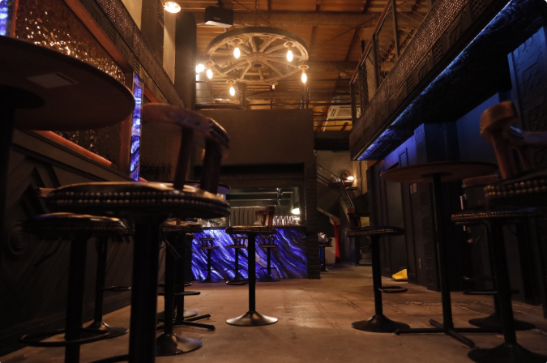

秋田町の夜に似合う、スピークイージーの“隠れ家”。
1920〜1933年、アメリカに存在した無許可バー“スピークイージー”の空気感をヒントに、 ひっそりと佇む一軒をつくりました（2022年12月オープン）。 仕事終わりの一杯から、深夜の二軒目・三軒目まで——秋田町の夜を、少しだけ上質に。
秋田町の隠れ家バー / 深夜4時まで
Wack da.vinch.
秋田町で、夜のスイッチを入れる。
1860年に万延元年遣米使節として海を渡った侍たちと、カクテル黄金時代のアメリカ。
その旅にインスパイアされた Wack da.vinch. は、和と洋が絶妙にブレンドされたカクテルバー
秋田町エリアで、静かに飲みたい夜も、語りたい深夜も。20:00〜翌4:00まで営業しています。
1920〜1933年、アメリカに存在した無許可バー“スピークイージー”の空気感をヒントに、 ひっそりと佇む一軒をつくりました（2022年12月オープン）。 仕事終わりの一杯から、深夜の二軒目・三軒目まで——秋田町の夜を、少しだけ上質に。

入口で迎えるのは、光を含む黒い表情の壁材と無骨な鋼板のコントラスト。 1階はカウンターで気軽に、2階は革張りソファで会話と余韻を。 秋田町の深夜に、落ち着いた時間を用意しています。
フレッシュフルーツのカクテル、遊び心ある演出系、ノンアルのモクテルまで。 さらに、パスタやピザ、スイーツも揃えています。 “秋田町で深夜まで食事もできるバー”として、軽い一皿から〆までおまかせください。
秋田町の隠れ家バーで、シグネチャーカクテルと季節の一杯を。

Access / Hours（秋田町エリア・深夜営業）
徳島県徳島市両国橋11-2（秋田町エリア）
20:00–04:00（水曜日定休日）
秋田町で深夜まで営業している隠れ家バー。二軒目・三軒目の一杯にもどうぞ。